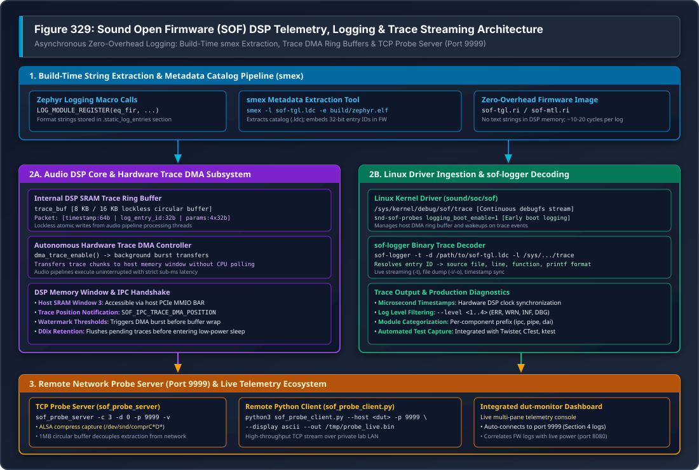

DSP Telemetry, Logging & Traces#
Sound Open Firmware (SOF) features a high-performance, asynchronous logging and telemetry infrastructure designed specifically for hard real-time embedded audio DSPs. Because audio signal processing operates on strict sub-millisecond scheduling deadlines (e.g. 1 ms or 200 µs periods), DSP firmware cannot block on slow UART serial writes or synchronous host communications. Instead, SOF combines compile-time string dictionary extraction (smex), hardware DMA circular buffers, native Zephyr RTOS structured logging, and network-accessible telemetry servers.
{kind=link}

Figure 334 Figure 329: Sound Open Firmware (SOF) DSP Telemetry, Logging & Trace Streaming Architecture#
—
Architecture Overview#
The SOF logging infrastructure is split into three decoupled operational stages:
Build-Time Dictionary Extraction: C source strings and format specifications are stripped from the target executable and saved into an external Log Dictionary Catalog (
.ldc), embedding only 32-bit metadata IDs into the firmware binary.Runtime Execution & Autonomous DMA: The DSP core writes fixed-size binary trace packets into an internal SRAM circular ring buffer. A dedicated background hardware DMA channel transfers trace chunks to a shared host memory window without stalling audio pipeline processing loops.
Host-Side Ingestion & Real-Time Decoding: The host Linux kernel exposes binary trace buffers via
debugfs, and user-space utilities (sof-logger,sof_probe_server) decode entry IDs against the.ldcdictionary in real time.
—
Zephyr Structured Logging Integration#
Modern SOF firmware natively integrates with the Zephyr RTOS logging subsystem (zephyr/logging/log.h). Each firmware module registers its logging domain and default verbosity level:
#include <zephyr/logging/log.h>
#include <sof/audio/component_ext.h>
/* Register module with Kconfig-defined default log level */
LOG_MODULE_REGISTER(eq_fir, CONFIG_SOF_LOG_LEVEL);
int eq_fir_process(struct comp_dev *dev)
{
LOG_DBG("eq_fir_process: dev %p, frame count %u", dev, dev->frames);
if (dev->state != COMP_STATE_ACTIVE) {
LOG_WRN("eq_fir: processing called while state=%u not active", dev->state);
return -EINVAL;
}
/* Processing inner loop executes without logging overhead */
return 0;
}
Standard Logging Levels#
SOF utilizes four standard log levels mapped directly to Zephyr severity ratings:
Logging Macro |
Numeric Level |
Recommended Production & Debug Usage |
|---|---|---|
|
Level 1 |
Critical runtime failures, unrecoverable hardware errors, invalid IPC state transitions, memory allocations faults. Always enabled in production. |
|
Level 2 |
Recoverable boundary conditions, parameter sanitization clamps, non-fatal buffer underrun/overrun warnings. |
|
Level 3 |
Milestone events: component instantiation, pipeline binding, audio stream start/stop, clock frequency changes, power state transitions (D0 $leftrightarrow$ D0ix). |
|
Level 4 |
Verbose per-buffer execution traces, coefficient updates, DMA pointer offsets. Disabled in release builds to save CPU cycles and DMA bandwidth. |
—
Compile-Time String Extraction with smex#
To minimize the DSP memory footprint and avoid transmitting bulky ASCII text across memory buses, SOF employs the smex (String Metadata Extractor) build tool:
Linker Placement: String literals, filenames, line numbers, and printf format arguments in
LOG_*invocations are placed in a dedicated read-only section (.static_log_entries) of the ELF binary.Metadata Harvesting: During the firmware build,
smexparses the.static_log_entriessection ofzephyr.elf:smex -l build/sof-tgl.ldc -e build/zephyr/zephyr.elf
Dictionary Catalog (``.ldc``):
smexextracts format strings and argument typing into the.ldccatalog file. In the binary firmware image (.ri/.bin), the compiler and linker emit compact 32-bit integer entry IDs.Footprint Reduction: This reduces firmware binary size by 40–70% and reduces DSP trace logging execution to approximately 10–20 clock cycles per event.
—
Runtime DSP Trace DMA Engine#
At runtime, logging operations must never interrupt audio pipelines executing on strict DMA-driven period boundaries:
+-------------------------------------------------------------------------+
| DSP Internal SRAM (trace_buf) |
| |
| [ Audio Thread ] ---> Lockless Atomic Write -> [ Packet 0 | Packet 1 ] |
+-------------------------------------------------------------------------+
|
Autonomous Trace DMA Transfer
v
+-------------------------------------------------------------------------+
| Host Shared Memory (SRAM Window 3) |
| |
| [ DMA Position IPC ] -> Host Driver Interrupt -> [ Linux debugfs trace]|
+-------------------------------------------------------------------------+
Trace Packet Structure#
Each binary trace entry emitted into the internal SRAM circular buffer contains a packed binary header:
struct sof_log_entry {
uint64_t timestamp; /**< Hardware DSP timer tick count */
uint32_t log_entry_id; /**< 32-bit metadata ID resolved via .ldc catalog */
uint32_t params[4]; /**< Up to 4 runtime 32-bit format arguments */
} __attribute__((packed));
Autonomous Background Transfer#
Lockless Ring Buffer: The internal trace buffer (typically 8 KB or 16 KB) operates locklessly. Audio processing threads append trace packets using atomic pointer operations without acquiring mutexes or disabling interrupts.
Trace DMA Controller: A background hardware DMA channel transfers accumulated trace chunks to host shared memory (SRAM Window 3 on Intel cAVS/ACE architectures).
Watermark Triggering: When the buffer reaches its configured watermark threshold or a periodic timer fires, the DMA burst executes autonomously without DSP CPU polling.
Trace Position IPC: The DSP notifies the host kernel of newly available trace data by posting an asynchronous
SOF_IPC_TRACE_DMA_POSITIONmessage containing the write pointer offset.
—
Host-Side Ingestion & Decoding#
Linux Kernel debugfs Trace Node#
On Linux hosts with the mainline SOF driver loaded, the raw binary trace buffer is exposed via debugfs:
/sys/kernel/debug/sof/trace
Reading this file yields the continuous binary stream emitted by the DSP Trace DMA engine.
Early Boot Logging (snd-sof-probes)#
To capture early firmware initialization messages prior to userspace audio server startup, the snd-sof-probes client driver provides the logging_boot_enable parameter:
# Reload probe driver with boot logging enabled
sudo rmmod snd_sof_probes 2>/dev/null
sudo modprobe snd_sof_probes logging_boot_enable=1
# Verify boot logging initialization in kernel dmesg
dmesg | grep "logging_boot"
When enabled, the driver automatically allocates extraction DMA channels during probe registration and drains pre-buffered firmware initialization logs (up to 4 KB) before ALSA audio streams open.
—
Using sof-logger#
The sof-logger host utility reads the binary trace stream, resolves metadata entry IDs using the .ldc catalog, and prints formatted messages with microsecond-accurate timestamps:
Live Continuous Streaming#
# Stream and decode live traces directly from debugfs
sof-logger -t -l /lib/firmware/intel/sof-ipc4/tgl/community/sof-tgl.ldc
Offline Binary Trace Decoding#
If a binary trace dump was captured during an automated test run or hardware crash:
# Dump raw trace buffer to file
cat /sys/kernel/debug/sof/trace > /tmp/fw_trace.bin
# Decode offline trace file
sof-logger -d /path/to/sof-tgl.ldc -i /tmp/fw_trace.bin -o /tmp/decoded_trace.txt
Command-Line Options#
Flag |
Description & Usage |
|---|---|
|
Enable continuous real-time streaming mode (follows stream until interrupted). |
|
Specify the Log Dictionary Catalog file matching the target firmware build. |
|
Read binary trace data from a saved file instead of the default debugfs node. |
|
Write human-readable decoded trace output to the specified file. |
|
Strip ANSI color formatting codes for clean file logging. |
|
Filter messages below the specified severity level (1=ERR, 2=WRN, 3=INF, 4=DBG). |
—
Network Probe Server Streaming (Port 9999)#
On remote development and automated validation setups (DUTs), running sof-logger over SSH introduces significant network latency and terminal process overhead. SOF provides a high-throughput C streaming daemon—``sof_probe_server``—listening on TCP port 9999:
+--------------------------+ +--------------------------+
| Target DUT | | Host Analysis Workstation|
| | | |
| [ DSP Trace DMA ] | | |
| | | | |
| v | | |
| [/dev/snd/comprC3D0] | | |
| | | | |
| v | | |
| [sof_probe_server :9999] | --- TCP/LAN --> | [sof_probe_client.py] |
| (1MB Ring Buffer) | (Port 9999) | or |
| | | [dut-monitor Dashboard] |
+--------------------------+ +--------------------------+
Running the Probe Server on Target DUT#
# Launch probe server on target board in background
timeout 15 ssh -o ConnectTimeout=5 root@<dut> \
'nohup /usr/local/bin/sof_probe_server -c 3 -d 0 -p 9999 -v > /tmp/probe_server.log 2>&1 &'
Streaming via Host Python Client#
On the host workstation, stream and preview logs over the network:
# Connect to DUT probe server and stream live ASCII log output
python3 tools/sof-probe-server/sof_probe_client.py \
--host <dut-ip> --port 9999 --display ascii --out /tmp/dut_trace.bin
Integrated dut-monitor Dashboard#
The dut-monitor terminal dashboard automatically connects to sof_probe_server on TCP port 9999 and renders live decoded DSP logs in Section 4, alongside synchronized power telemetry (port 8080) and CPU metrics.
—
Troubleshooting & Diagnostics#
Trace Buffer Wraparound & Missing Entries#
Symptom:
sof-loggerprints[DROPPED X ENTRIES]or non-sequential timestamps.Root Cause: Host reader cannot consume trace DMA packets quickly enough during bursts of
LOG_DBGcalls, overflowing the internal SRAM buffer.Resolution: 1. Filter out high-frequency debug logs by raising
CONFIG_SOF_LOG_LEVELtoCONFIG_LOG_DEFAULT_LEVEL=3(INFO). 2. Increase internal trace buffer size in Kconfig:CONFIG_SOF_TRACE_BUF_SIZE=16384. 3. Stream viasof_probe_serverusing its 1 MB host-side circular queue rather than reading directly through debugfs over SSH.
Dictionary Mismatch (Unresolved IDs)#
Symptom:
sof-loggeroutputs<unknown log entry 0x12ab34cd>.Root Cause: The
.ldcdictionary supplied tosof-loggerdoes not match the exact binary running on the DSP.Resolution: Ensure the
.ldcfile corresponds to the identical Git commit and build configuration:sof-logger -l build-sof-staging/sof/sof-tgl.ldc -t
Zero Data from debugfs Node#
Symptom:
cat /sys/kernel/debug/sof/tracereturns 0 bytes.Root Cause: Trace DMA is not enabled or the DSP core is suspended in D0ix sleep.
Resolution: 1. Start an audio playback stream to bring the DSP into active D0 state:
aplay -D hw:0 -r 48000 -c 2 -f S16_LE /dev/zero &. 2. Verify kernel probe module:modprobe snd-sof-probes logging_boot_enable=1.